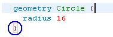
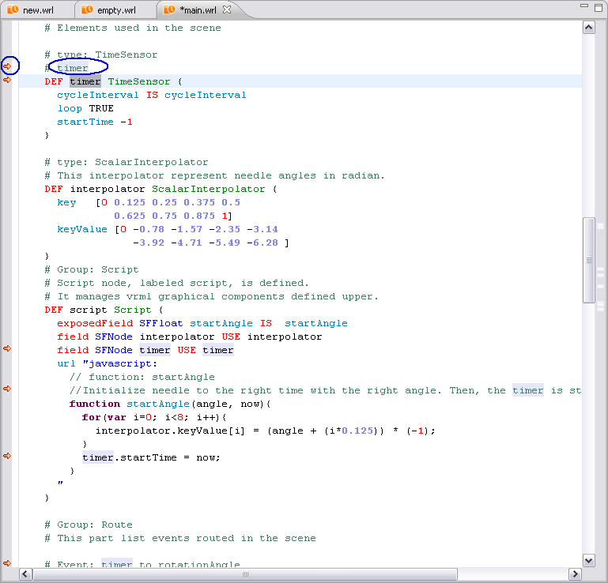
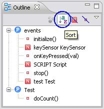

This document aims to describe the Mobile Widgets SDK VRML Editor Plug-in.
This plug-in, once integrated in the Eclipse platform, provides a complete VRML editor.
The following functionalities are embedded in this plug-in:
The functionalities provided by the editor apply to " .wrl " files in " src " folder. They are detailed below.
Each file with the " .wrl " extension can be open with the VRML Editor plug-in.
When the plug-in is installed, these files are represented by the following icon:
A " .wrl " file can be created with the creation wizard included in the VRML Editor plug-in.
In top menu bar, 2 possibilities:
In top menu bar, 2 possibilities:

" New - Select a wizard " dialog box is opened.
Select " VRML File " under " General " folder.
Select " Next > " button to continue.
" New VRML File - Create a new VRML File " dialog box is opened.
Choose a location by entering or Selecting the " parent folder " and " src " folder.
Enter a name for this file in " File name: " textfield. (the extension does not need to be specified)
Select " Finish " button to open the new file " .wrl ".
The newly created file (here " new.wrl ") is displayed and contains a VRML header.
Note:
A " .wrl " file can also be created with a simple File creation wizard.
But in that case, the extension " .wrl " will have to be specified in " File name: " textfield.
The header will not be present.
" New - Select a wizard " dialog box is opened.
Select " File " under " General " folder.
Select " Next > " button to continue.

" New VRML File - Creates a new VRML File " dialog box is opened.
Choose a location by entering or Selecting the " parent folder " and " src " folder.
Enter a name with the extension " .wrl " for this file in " File name: " textfield.
Select " Finish " button to open the new file " .wrl ".

The newly created file (here " empty.wrl ") is displayed without contain a VRML header.
However, it is a valid " .wrl " file that has all the features of the VRML Editor.
The VRML editor automatically provides a syntax highlighting, as shown below:
Select a VRML node name or a JavaScript function name.
Then

" Refactor - Enter new name: " dialog box is opened.
The current selection is displayed to the " New name: " textfield.
If you enter a new name in the " New name: " textfield (here image for example) and press " Finish " button, all the occurrences of the item are replaced by this new name.
(For example, here all the occurrences myImage are replaced by image).
The code blocks delimited by braces. " { " or " } " are signalled in the margin by a minus sign (marked in blue).
When one of these minus signs is clicked, the corresponding block is collapsed.
A plus sign (marked in blue) appears in the margin, allowing expanding the block.

The areas delimited by braces " { } " or square brackets " [ ] " can be automatically selected.
To have automatic selection of areas:

When the cursor is positioned just after a brace " { " or " } " or a square bracket " [ " or " ] " (opening or closing), the associated bracket is highlighted with a little pink rectangle (marked in blue).

When a node or a function name is selected in the current " .wrl " file (here " main.wrl "):

In top menu bar, select " Window " then " Preferences " then " VRML Editor ".
" Preferences - VRML Editor " dialog box is opened.
The line automatic formatting can be configured in the VRML Editor preferences.
By default, the option " Line auto formatting when typing } activated " is not checked.
To activate this option, check " Line auto formatting when typing } activated ".
Select " Apply " button and select " OK " button to save your preferences.
If you activate it, when a closing brace " } " is typed, the current line is automatically formatted.
For example, the following line is typed:
When a closing brace is added at the end of the line, the line is automatically formatted:

Code formatting can also be applied to code blocks.
For example, a block of code to format:

Select the code to format.

Then, 2 possibilities:

The block of code is now well-formatted:
Note:
If no code is selected, the whole document is formatted.
The VRML and JavaScript comment characters are different.
But there is only one key binding to comment/uncomment code: (" Ctrl + Shift + C ") shortcut.
The comment character in VRML language is " ".
To comment some code:

When the code is selected, using (" Ctrl + Shift + C ") shorcut.
The selected lines are commented.
To uncomment some code commented:

The selected lines are uncommented : the comment character " " is now not displayed.
The comment character in JavaScript is " ".
To comment or uncomment some Javascript code:
The selected lines are commented or uncommented.
When the Eclipse spell checking is activated, the errors present in comments (VRML and JavaScript) are underlined.

If the error is fixed, the editor is updated and the word is no longer underlined.

In top menu bar, select " Window " then " Preferences " then " General " then " Editors " then " Text Editors " then " Spelling ".
" Preferences - Spelling " dialog box is opened.
To activate spell checking, check the option " Enable spell checking ".
Keep all options checked.
Select " Apply " button and select " OK " button to save your preferences.
The VRML Editor provides an outline view which shows:
This outline view allows reaching easily the Protos, the VRML objects (node definition) and the JavaScript functions, just by clicking on their names.
By default, the items (Protos, VRML objects (node definition) and JavaScript functions) are displayed by order of appearance in the file.
They can be sorted in alphabetical order with the button on the outline menu bar.

Items can also be hidden by type (VRML objects (node definition) or JavaScript function).
 button in outline menu bar.
button in outline menu bar.
The VRML Editor provides completion for VRML attributes proposition, VRML objects (node definition) and for JavaScript functions.
Completion called by (" Ctrl + Space ") shortcut.
In a VRML object declaration, the completion can be called on order to display the arguments of the object.
Left click after the object and use (" Ctrl + Space ") shortcut to display the arguments applied to the object.

When a VRML object is defined in the current " .wrl " file (by using " DEF "), completion is activated for this object.
To use completion, write the object's name (here " SCRIPT " for example) followed by a dot.
Left click after the dot and use (" Ctrl + Space ") shortcut to display the list of available propositions.
The functions available in JavaScript can be displayed and selected the same way, with an additional help (in the yellow box).
To use completion, write the object's name (here " SCRIPT " for example) followed by a dot.
Left click after the dot and use (" Ctrl + Space ") shortcut to display the list of available propositions.
Moreover, completion proposals also appear when no word has been typed within a function:
When this list is displayed, typing one or several letters will reduce it to the appropriate entries:

When the completion is called within a script but outside JavaScript functions, a template function is created with a generic name " function name() ":
Important:
A first fonction must be existed before the space where the completion of function template is launched.
Like " function initialize() {} " for example.
The VRML Editor provides some code and comments auto-insertion functionalities.
The word " Script " followed by the " Enter " key clicked is recognized by the editor. The following code block is inserted:
Comments are inserted automatically in three cases (before a root node, before a VRML node and before a JavaScript function):
Before a root node, type a comment character " ".
Then click on " Enter " key.
Comments are inserted before the root node.
Before a VRML node, type a comment character " ".
Then click on " Enter " key.

Comments are inserted before the VRML node.
Before a JavaScript function , type a comment character " ".
Then click on " Enter " key.
Comments are inserted before the JavaScript function.
The VRML Editor offers the possibility to automatically generate the field SFNode ( Single Field Node ) line for each node present in the document.
This option is very practical in cases of huge VRML files.
It avoids the user to search through all the files:
For example, the MY_TIMER node has not been used in the SCRIPT script:


To access to Generate field SFNodes, 2 possibilities:

" Generate field SFNodes " dialog box is opened.
This wizard contains only the nodes that have not been used in scripts.
Use the checkboxes to indicate which SFNode fields have to be generated.
Select " Finish " button.
For this example, " MY_TIMER " is checked.

The selected nodes are added at the beginning of the script.
The field name is the node name in lowercase (myTimer).
Underscores are removed and the letter that follows them is in uppercase.
By default, the character used for auto-indentation (when the text is formatted) is two spaces.
This character can be modified in the Preferences menu.
In top menu bar, select " Window " then " Preferences " then " VRML Editor ".

" Preferences - VRML Editor " dialog box is opened.
Choose your " Auto indentation character " by " 2 spaces ", " 4 spaces " or " Tab character ".
The VRML Editor Preferences page also allows enabling or disabling the line auto formatting.